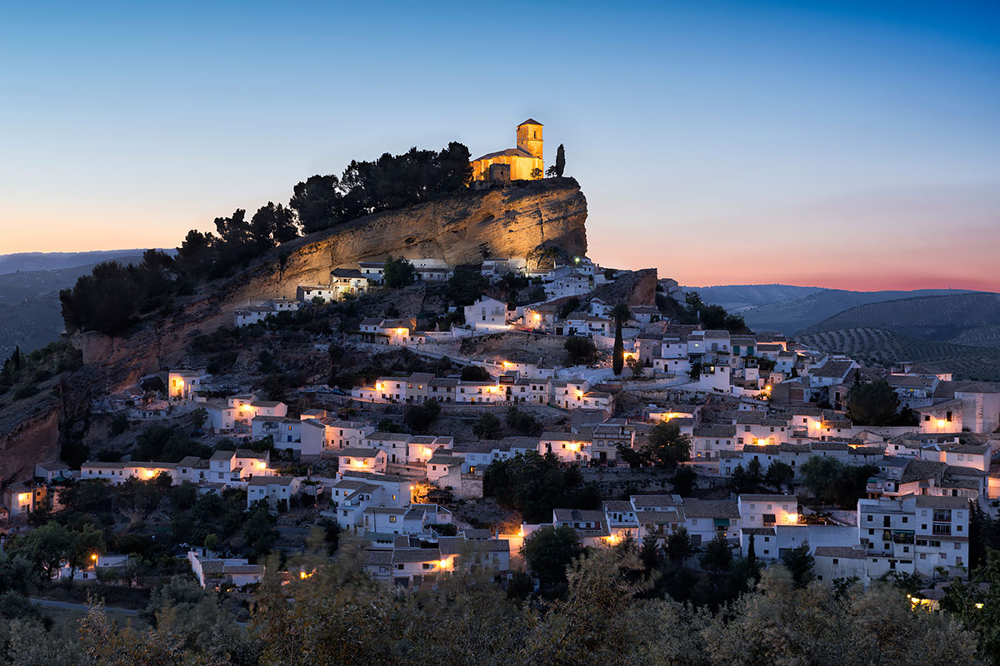
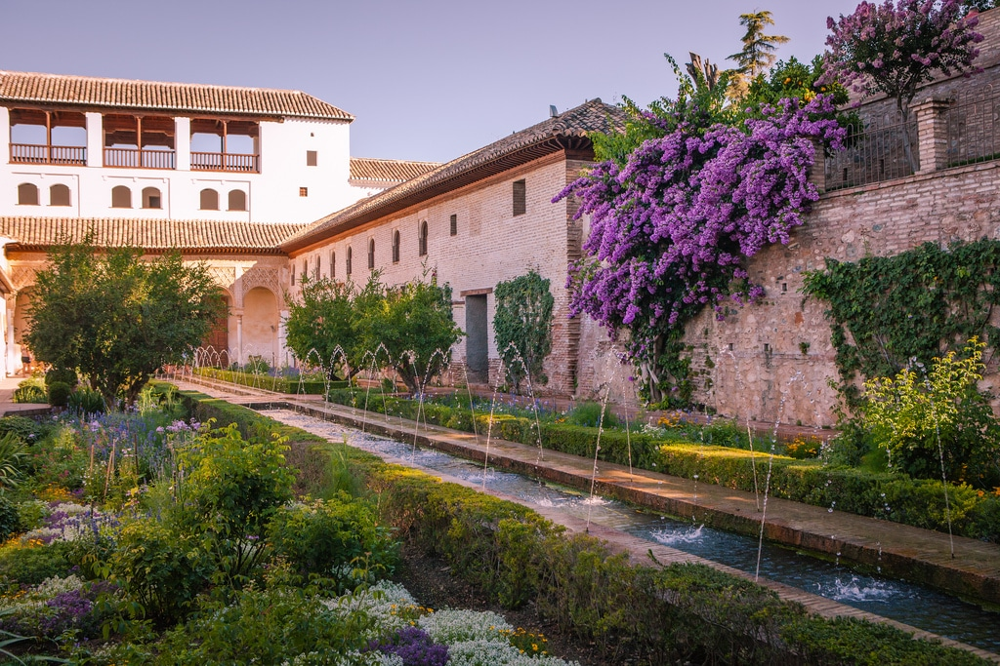
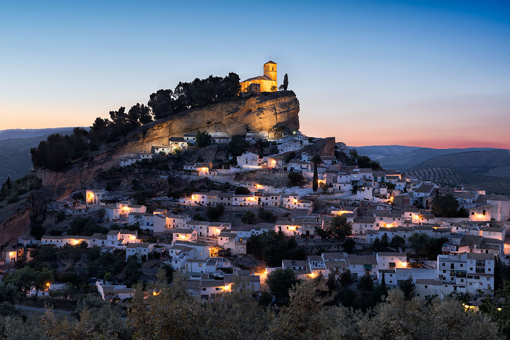
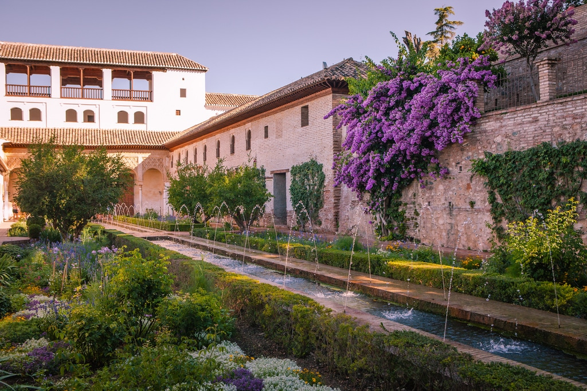

Sevilla was Originally founded as a Roman city and now home to three UNESCO World Heritage Sites, Seville is bursting with antique charm. The Alcazar palace complex is a stunning collage of architectural styles, and the Cathedral will impress you with its beauty and its status as the burial site of Christopher Columbus. The Metropol Parasol is the world’s largest wooden structure, a massive mix of grids and swirls that contains a market and a terrace observatory.
The Alhambra citadel of Granada is one of the most famous buildings in Spain: a Moorish fortress with grand archways and delicate ornamental mosaics. Step backwards in time as you wind through the ascending cobblestone streets of Albayzin. You’ll be rewarded with beautiful views from the Mirador San Nicolas. Granada’s nightlife is vibrant and varied, thanks in part to its student population. Hit the bars of Calle Elvira or, for a quieter outing, the traditional tea rooms of La Calle de Las Teterias.
 


